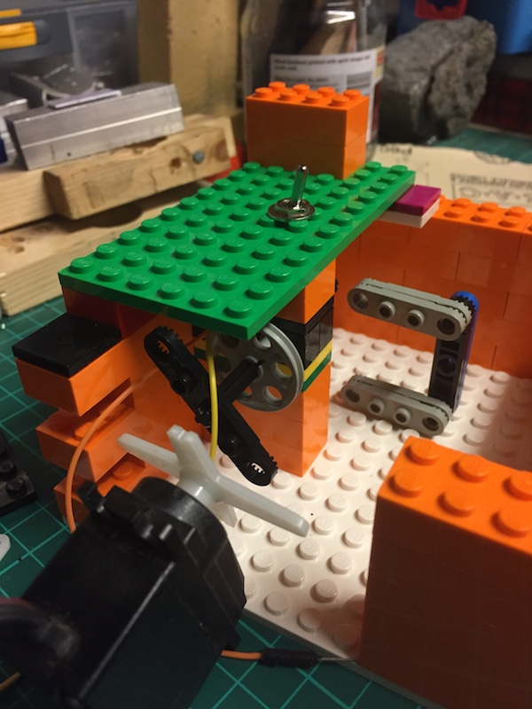
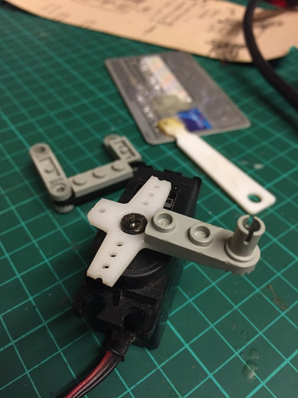
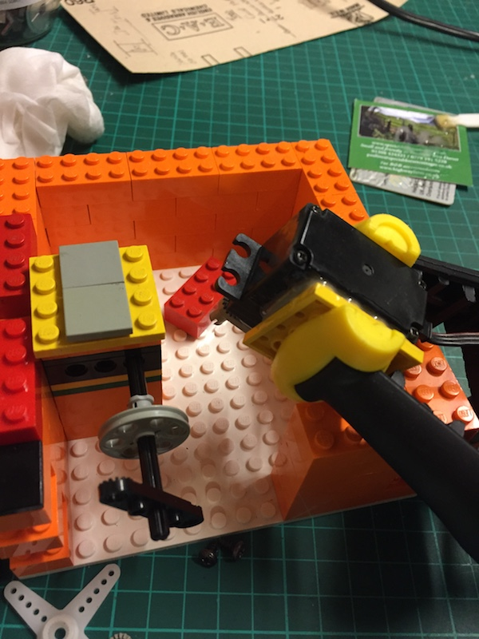
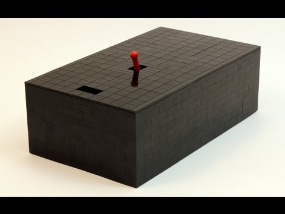

The Finger
So I’ve got a rudimentary ‘box’ built, and I know how to control the servos with an Arduino.
I figured the next step is to work on the ‘finger’. The design evolved through trial and error, with a goal to Keep Things Simple. There’s some cool and very clever implementations a Google search away, but I worked my own design out using Brains.
The photo here shows my initial design – A basic ‘C’ shape constructed (again) from Lego. The 90 degree joints are fairly strong, but I suspect in the long term I’ll be reinforcing them somehow. Superglue is always an option…

Attaching the finger to the servo was achieved using Araldite. Some people have two rules when they make things:
- If it doesn’t move and needs to, spray with WD40.
- If it moves and shouldn’t use Duct(/Duck) Tape.
I think rule (2) is for amateurs. May I present my own rules…
Ladies and Gentlemen, I give you exhibits A and B:


In the second photo I’m Aralditing the servo to small Lego base plate. It’s secure enough it won’t ever detach, and ‘Lego’-enough I can still move it around inside the box whenever I need to.
I’m using Araldite ‘Standard’ here. It takes a full 24 hours to harden, but gives a much better hold than the quicker-to-set Araldate ‘Rapid’.
The eagle-eyed might also notice I’ve added a small switch to the (fixed) lid of the box. No glue this time…
That will be connected up to the Arduino and coded up so it triggers the servos when ‘switched’. I’m going to give some thought to that over the next few days – I don’t want the box to simply ‘turn off’ the switch in a direct manner. My main motivation for using an Arduino is that I can code-in some ‘personality’ into it.
To see what I mean, check out the awesome video from JK Brickworks: 
If I can achieve something similar to this, I’ll be happy!